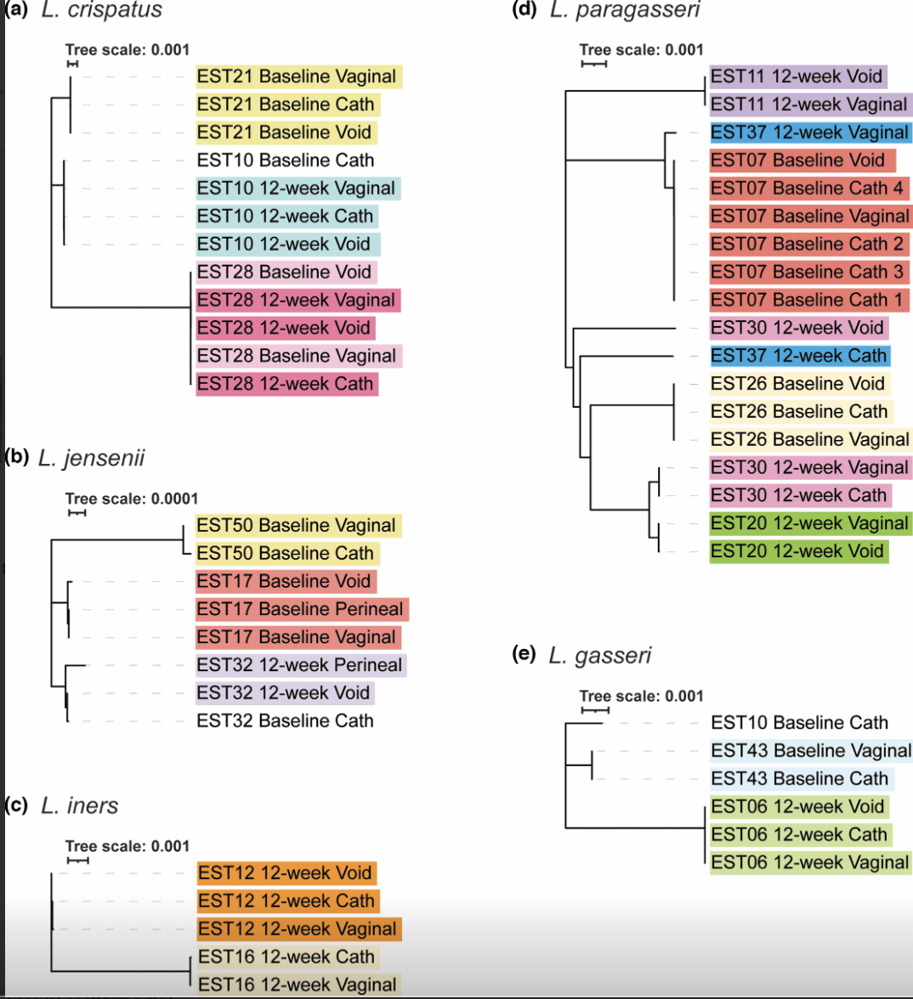

This project investigated whether temperate bacteriophages can be experimentally evolved into obligately lytic phages, which are more suitable for phage therapy. Aim 1: Isolation and characterization of Temperate Escherichia coli phages from urinary lysogens
Aim 2: Experimental Evolution: A modification of the Appelmans' Protocol to select for lysis in temperate phages
Aim 3: Temporal mutational analysis across hosts & protein-level analysis of adaptive mutations
This project examined whether the female urinary and vaginal microbiotas are connected by analyzing Lactobacillus strains commonly associated with urogenital health. Average nucleotide identity (ANI), alignment, single-nucleotide polymorphism (SNP), and CRISPR comparisons between strains from the same participant were performed. Simultaneously, simulations of genome assembly and ANI comparisons and present a statistical method for distinguishing related, unrelated, and identical strains.
Developed a bioinformatics pipeline to assemble mitogenomes from fish species using next-generation sequencing data.